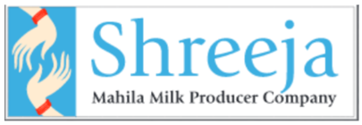
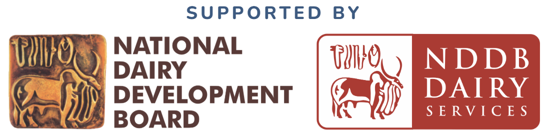

డా. వర్గీస్ కురియన్ జయంతి – జాతీయ పాల దినోత్సవం. ఈ మూడు క్రియేటివ్లను సభ్యులకు పంపండి.
Three ready-to-share creatives. Download them, then forward them to MPP WhatsApp groups and to members. Each one does a different job, explained below.
Use all three together: the video makes people feel the story, the portrait poster spreads it quickly, and the journey poster gives the facts.
Copy one, paste it into WhatsApp, then attach the video or poster.
నవంబర్ 26 – జాతీయ పాల దినోత్సవం 🥛 శ్వేత విప్లవ పితామహుడు డా. వర్గీస్ కురియన్ గారి జయంతి. రైతులే యజమానులుగా ఉండే పాల సంస్థ అనే ఆయన కలను, ఈ రోజు శ్రీజలోని 1.5 లక్షల మహిళా సభ్యులు నిజం చేస్తున్నారు. ఈ వీడియో చూడండి, మీ తోటి సభ్యులతో పంచుకోండి. శ్రీజ టోల్ ఫ్రీ: 1800 532 2600
26 November is National Milk Day, the birth anniversary of Dr. Verghese Kurien, Father of India's White Revolution. His dream of farmer-owned dairies lives on in Shreeja, owned by 1.5 lakh women. Please share the Telugu video and the portrait poster in all MPP WhatsApp groups, and display the journey poster at the pooling point.
Short reminders so the creatives reach members the right way.